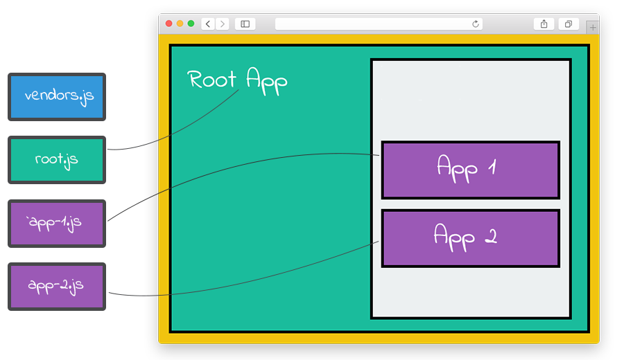
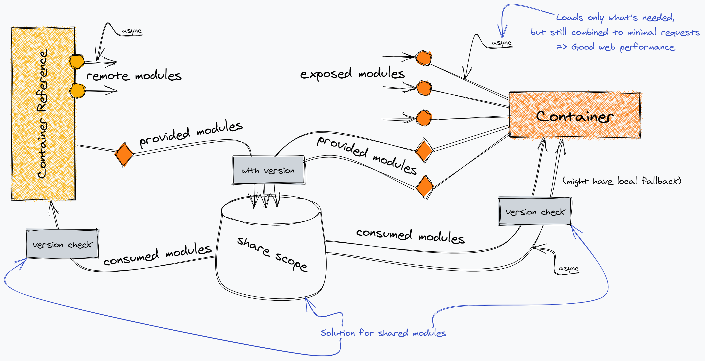

микро
фронтенды
Коротко о себе
Артём Халецкий
Веб-разработчик
other 10 лет опыта,
пишу на React для веба,
на React Native для мобилок,
и на C# .Net Core для бека,
еще делал OrelJS...
План на сегодня
- Зачем нам микрофронтенды?
- Обзор возможных решений
- Webpack Module Federation
- Demo
- Полезные ссылки
1. Зачем нам микрофронтенды?
Если у вас над проектом работает одна команда - НЕЗАЧЕМ
Но, если параллельно работают несколько команд, тогда есть плюсы:
- Слабая связанность
- Меньше кодовая база - проще поддерживать даже новичкам (1 репо - 1 сервис)
- Быстрая сборка и деплой
- Проще тестировать (независимо от других команд)
- Изоляция ошибок - приложение не падает полностью
- Легко делать частичный релиз или проводить A/B тестирование
- Каждый сервис можно писать на разных фреймворках и языках
Есть одно НО, о котором нужно помнить.
У микрофронтендов нет полной изоляции - общий дом, события, event loop, адресная строка.
2. Обзор возможных решений

- iframe
- SSI (Server Side Includes)
- Linked Spa Pages (NextJS Multi Zones)
- Single SPA like Frameworks (Piral, Frint, Ragu)
- Webpack Module Federation
- Что-то своё (долго, дорого, ох...но)
Что-то своё:
3. Webpack Module Federation
Кто использует?
Adidas ∙ Ford ∙ JPMorgan ∙ Microsoft
Shopify ∙ VMware ∙ Reddit ∙ Digital Ocean
Alibaba ∙ Tencent ∙ Amazon ∙ Sony ∙ Paypal
OLX ∙ Home Depot ∙ Epic Games ∙ Verizon
CloudFlare ∙ Cisco ∙ Business Insider ∙ Box.com
В чем фишка?
- Минимум настроек и бейлерплейта
- Переиспользование общих библиотек
- Lazy-loading модулей
- Сборка прямо в браузере
Диаграммы


Как начать использовать?
Host - микрофронт, который загружается первым и может подключать модули из других микрофронтов.
Remote - микрофронт, который предоставляет модули, но так же как и Host, может подключать модули из других Remote.
Host config
new webpack.container.ModuleFederationPlugin({
name: 'host',
remotes: {
app1: 'app1@http://localhost:3001/remoteEntry.js',
app2: 'app2@http://localhost:3002/remoteEntry.js',
},
shared: {
react: { singleton: true, eager: true },
'react-dom': { singleton: true, eager: true },
},
}),
Remote config
new webpack.container.ModuleFederationPlugin({
name: 'app1',
filename: 'remoteEntry.js',
exposes: {
'./Button': './src/components/Button.js',
},
shared: {
react: { singleton: true },
'react-dom': { singleton: true },
},
}),
Подключение модуля
import React, { Suspense } from "react";
const RemoteButton = React.lazy(() => import("app1/Button"));
const App = () => {
return (
)
}